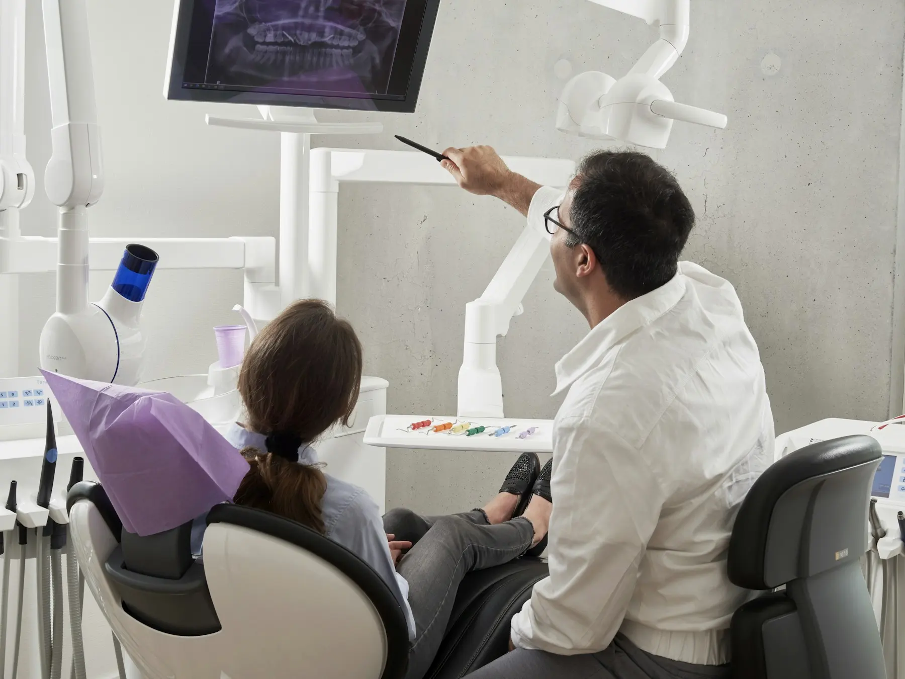
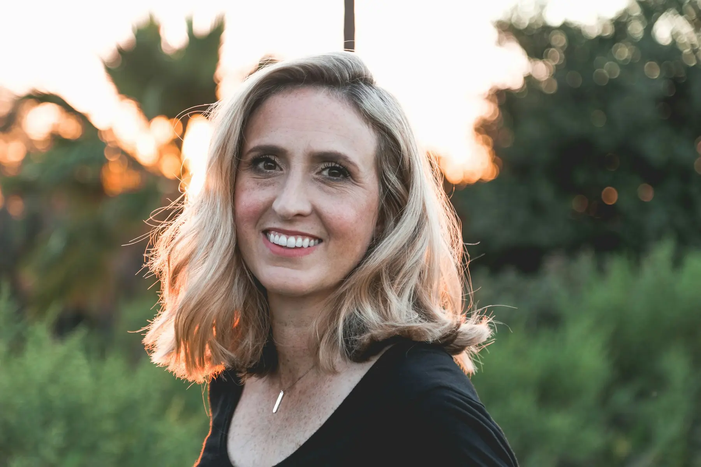

Um sorriso que parece o seu, só que descansado.
Estética e reabilitação oral com planejamento digital. Você vê o resultado na tela, e depois na própria boca, antes de decidir qualquer tratamento.
Tratamentos
Cada plano começa pela saúde da boca. Estética vem depois, e só quando faz sentido para você.
Lentes de contato dental e facetas
Estética
Para quemDentes com manchas que o clareamento não resolve, pequenos espaços, desgaste ou formato irregular.
Como éLâminas de cerâmica de 0,3 a 0,5 mm, feitas sob medida. Na maioria dos casos, sem desgaste ou com desgaste mínimo.
TempoEm média 3 a 4 sessões, com prova do resultado antes da cimentação final.
Implantes e reabilitação oral
Reabilitação
Para quemQuem perdeu um ou mais dentes, usa prótese removível ou sente dificuldade para mastigar.
Como éCirurgia guiada por tomografia, com planejamento da posição do implante feito no computador.
TempoDe 3 a 6 meses entre implante e coroa definitiva. Em casos selecionados, carga imediata.
Alinhadores transparentes
Ortodontia
Para quemAdultos com dentes desalinhados ou apinhados que preferem um aparelho discreto e removível.
Como éPlacas trocadas a cada 10 a 14 dias, usadas cerca de 22 horas por dia. Simulação 3D do movimento antes de começar.
TempoDe 6 a 18 meses, conforme o caso, com consultas a cada 6 a 8 semanas.
Clareamento supervisionado
Estética
Para quemDentes saudáveis que escureceram com o tempo, café, chá ou vinho.
Como éCombinação de sessão no consultório com moldeiras feitas sob medida para uso em casa.
TempoDe 2 a 3 semanas, com controle de sensibilidade em cada etapa.
Contorno gengival
Estética
Para quemQuem mostra muita gengiva ao sorrir ou tem dentes que parecem curtos.
Como éProcedimento com anestesia local, planejado junto com o desenho digital do sorriso.
TempoUma sessão, com cicatrização de 2 a 3 semanas.
Da primeira consulta ao sorriso pronto
Você só começa um tratamento depois de ver, na tela e na boca, como ele vai ficar.
- 1
Conversa
O que incomoda, o que você gosta no seu sorriso e o que espera mudar.
Primeira consulta · 60 min - 2
Escaneamento 3D
Fotos, vídeo e escaneamento intraoral, sem massa de moldagem.
Na mesma consulta - 3
Desenho digital
O novo sorriso é desenhado sobre o seu rosto, respeitando proporções e expressão.
Em até 7 dias - 4
Ensaio na boca
Uma prova provisória e reversível do resultado, para você ver e aprovar no espelho.
Segunda consulta - 5
Tratamento
Com tudo aprovado, executamos o plano e acompanhamos a manutenção.
Revisões a cada 6 meses

Diagnóstico que você consegue entender
- Scanner intraoralModelo 3D dos dentes em minutos, mostrado na tela durante a consulta.
- TomografiaPlanejamento de implantes com precisão milimétrica e cirurgia guiada.
- Fluxo digitalDesenho, prova e peças finais conectados, com menos sessões e menos ajustes.
- BiossegurançaEsterilização com rastreio por lote e materiais de uso único.
Natural antes de perfeito
Dente branco demais e formato igual em todo mundo denunciam o tratamento. Aqui a cor, o tamanho e a textura de cada dente são escolhidos para combinar com seu rosto, sua pele e sua idade.
Saber se é indicado para mim
Sobre a Dra. Marina
Comecei na odontologia atendendo pacientes que tinham vergonha de sorrir em fotos. Muitos já tinham feito tratamentos que deixaram o sorriso artificial. Foi aí que decidi me especializar em prótese e estética: para devolver o sorriso sem apagar a pessoa.
Hoje atendo em um consultório pequeno, com agenda espaçada, para que cada consulta tenha o tempo que precisa. Faço parte do planejamento de cada caso pessoalmente, do primeiro escaneamento à revisão de um ano.
- 2010Graduação em Odontologia
- 2014Especialização em Prótese Dentária
- 2018Mestrado em Clínica Odontológica
- 2022Formação em planejamento digital do sorriso
Responsável técnica: Dra. Marina Albuquerque · CRO-MG 00.000 (fictício). Formação e datas fictícias para demonstração.
Dúvidas frequentes
Lentes de contato dental estragam os dentes?
Quando bem indicadas, as lentes exigem desgaste mínimo ou nenhum. Por isso a indicação é feita só depois do escaneamento e do ensaio na boca.
Quanto tempo dura cada tratamento?
Depende do caso. Na primeira consulta você recebe um cronograma com o número de sessões e o tempo estimado de cada etapa.
Como são os valores e as formas de pagamento?
Valores e condições são apresentados pessoalmente, junto com o plano de tratamento, depois da avaliação.
Atendem convênio?
O consultório é particular. Fornecemos recibos e documentação para pedido de reembolso ao seu plano, quando ele permitir.
Sinto medo de dentista. Como vocês lidam com isso?
A primeira consulta é só conversa e escaneamento, sem nenhum procedimento. Explicamos cada etapa antes de começar, e você pode pedir pausa a qualquer momento.
Vamos conversar sobre o seu sorriso?
Agende a primeira consulta. São 60 minutos para entender o que você quer e mostrar o que é possível.